List Of Picnic Spots
Zoo
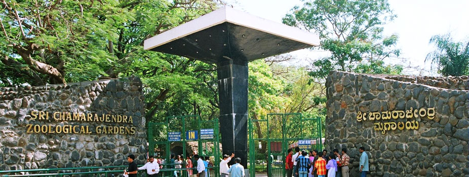
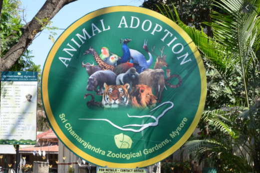
Mysuru Zoo (officially the Sri Chamarajendra Zoological Gardens) is a 157-acre zoo located near the palace in Mysore, India. It is one of the oldest and most popular zoos in India, and is home to a wide range of species. Mysore Zoo is one of the city's most popular attractions.While mainly depending on entry fees for its financing, an adoption scheme introduced in the early 2000s has been a success. Celebrities, institutions, animal lovers and volunteers of various clubs in the zoo have contributed directly to the welfare of the zoo inhabitants.
Entry fee for Mysore Zoo Rs 80 for adults and Rs. 40 for children aged between 5 to 12 years. Children below 5 years of age get a free entry to the zoo. If you opt for taking combo ticket which includes a visit to the zoo and Karanji Lake, then the price of the ticket is Rs 100 for adults and Rs 50 for children.
Location
Shuka Vana


Sri Swamiji has established Shuka Vana (Parrot Park), a rehabilitation centre for birds in the serene premises of Sri Ganapathy Sachchidananda Ashrama. Shuka Vana is a rehabilitation centre for the birds and has a tranquil setting. It houses several colorful and rare species of parrots from all around the world. The centre offers shelter to uncared and injured birds with a high degree of compassion and commitment. It has been established by Sri Ganapathy Sachchidananda Swamiji who believes that birds are crucial for the human race’s existence. Parrots here also represent one’s birth date and planet and upon visiting, one gets the fantastic chance of being in the presence of these birds. Shuka Vana is a great place to educate the children about bird life and they are sure to have a pleasant experience.
Entry is free. To get yourself photographed with exotic birds for a fee of Rs. 200 per bird, Scarlet Macaw, Cockatoo, etc.
Location
Railway Museum
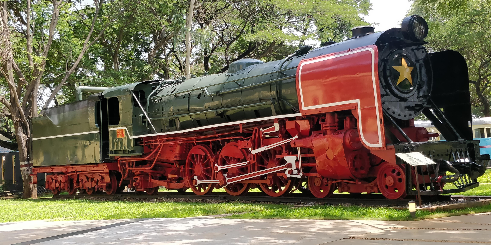
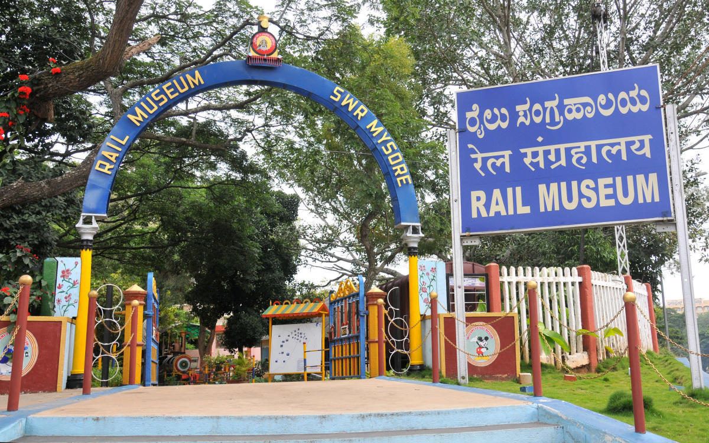
Located on Princess Road (opposite the main gate of CFTRI), it was started in 1979 due to the efforts of PM Joseph. This museum exhibits graphics presenting the growth of Indian railways, photos and paintings. In the Sriranga Mantapa section of the museum, are displayed the royal train compartment which was being used by the Kings and Queens of Mysore, a pillar from the Old Srirangapatna railway station and a wired fence which was being used in the bygone era. Few old steam locomotives are also on display here.
The Railway Museum at Mysore, India is an outdoor exhibit of vintage locomotives. It was setup in 1979 by Indian Railways and is the second such museum after the National Railway Museum in Delhi. The museum is situated opposite the Central Food Technology and Research Institute on Krishnaraja Sagar road. In addition to the locomotives it has a gallery of photographs and paintings depicting the growth of railways in India. Railway signals and lights are also displayed. The museum also has a battery-operated mini-train for children which makes a small ride in the grounds of the museum.
Entrance Fee :Rs. 20 Adult | Children [5 to 10 years]: Rs.10
Location
Karanji Lake

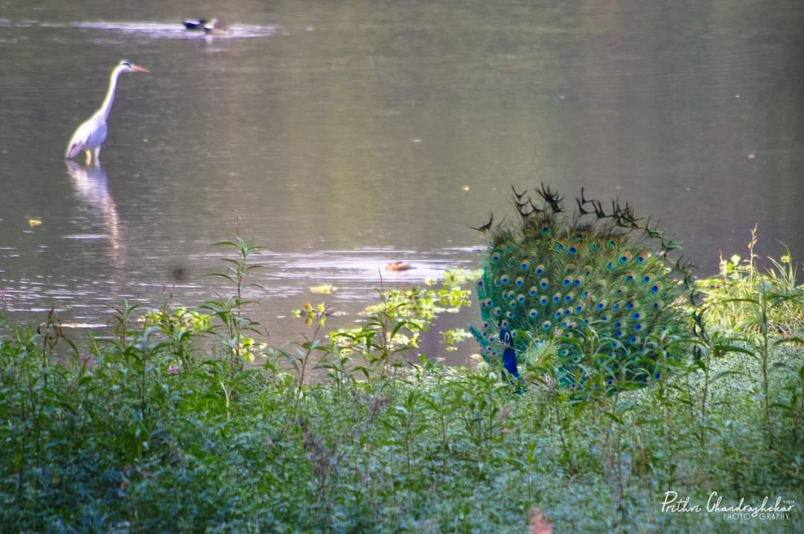
Initially, this lake was built as a percolation tank by the Mysore King, to serve as source of drinking water for residents and was used for other chores like bathing, washing, etc. In 1976, the lake has been taken as a part of Mysore Zoo. Since then, it has been maintained by the Mysore Zoo authority. Also known as Fountain Lake it is spread across an area of 90 hectares of lush greenery and rich fauna; out of 90 hectares of area, 55 hectares is the water spread area while the foreshore area is around 35 hectares.
Rs.10 per person for Adults
Rs.5 per person for Children (5-15 yrs) and Senior Citizens
Rs.10 for Still Camera
Rs.25 for Video Camera
Location
KRS
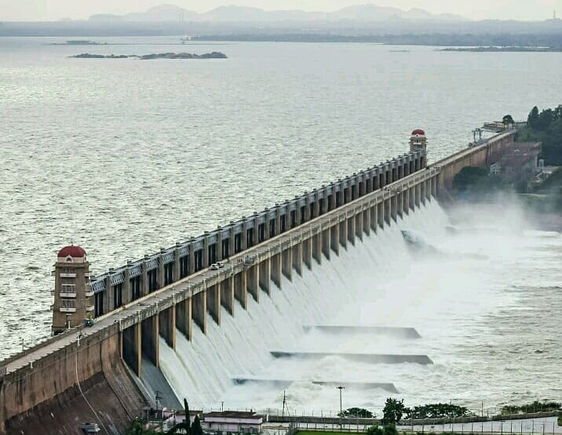
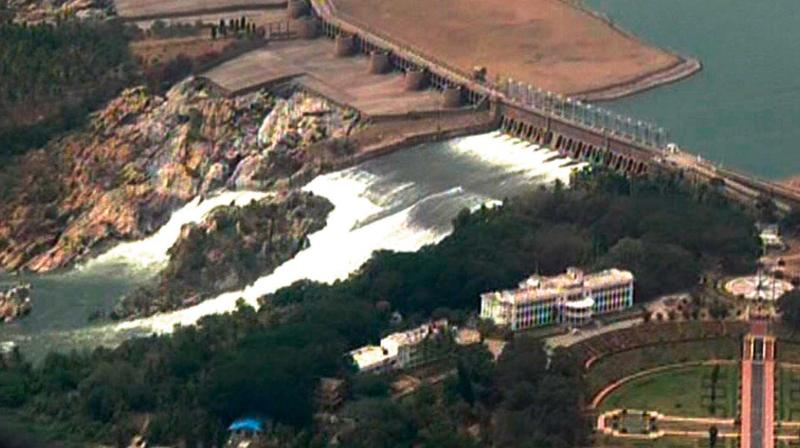
Krishna Raja Sagara, also popularly known as KRS, is a lake and the dam that creates it. They are close to the settlement of Krishna raja sagara in the Indian State of Karnataka. The gravity dam made of surki mortar is below the confluence of river Kaveri with its tributaries Hemavati and Lakshmana Tirtha, in the district of Mandya. Krishna Raja Wadiyar IV Maharaj of Mysore constructed the dam during famine despite the critical financial condition in State. One of the architects of the dam was Chief Engineer of Mysore M. Visvesvaraya. There is an ornamental garden, Brindavan Gardens, attached to the dam.
Rs.15 per person for Adults
Rs.5 per person for Children (5-10 yrs)
Location
KRS Backwaters
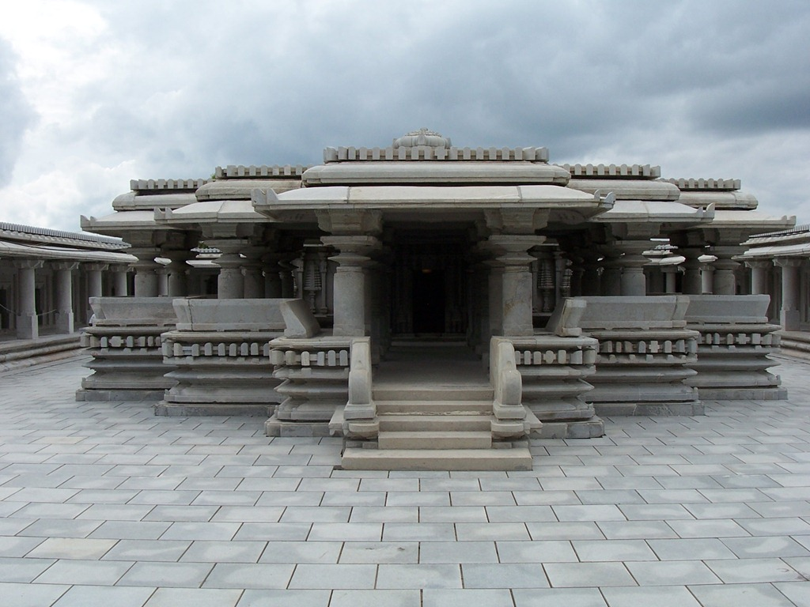
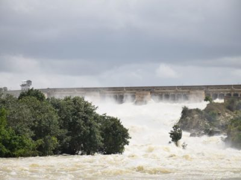
Even as monsoon continues unabated in the State filling dams and reservoirs, the visitors are flocking the tourist destinations to witness natue’s bounty and water spectacle. In the midst of all this, apart from Krishna Raja Sagar (KRS) dam, which is drawing huge crowds, is the other major attraction that is close by and it is the restored 700-year-old Sri Venugopala Swamy temple at the backwaters of KRS near Hosa Kannambadi village. The temple is not only a pilgrimage shrine but a tourist attraction too, though devotees are not allowed to offer coconuts and flowers. In fact, the temple does not even have a hundi (donation box) for offerings.
Location
Kukkarahalli Lake
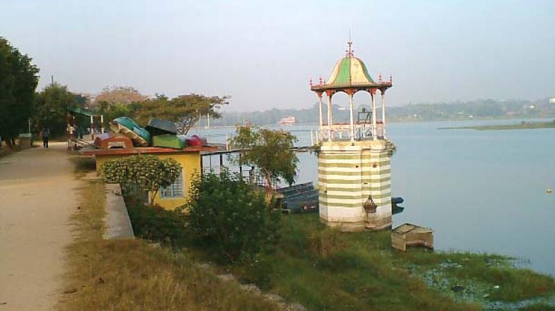
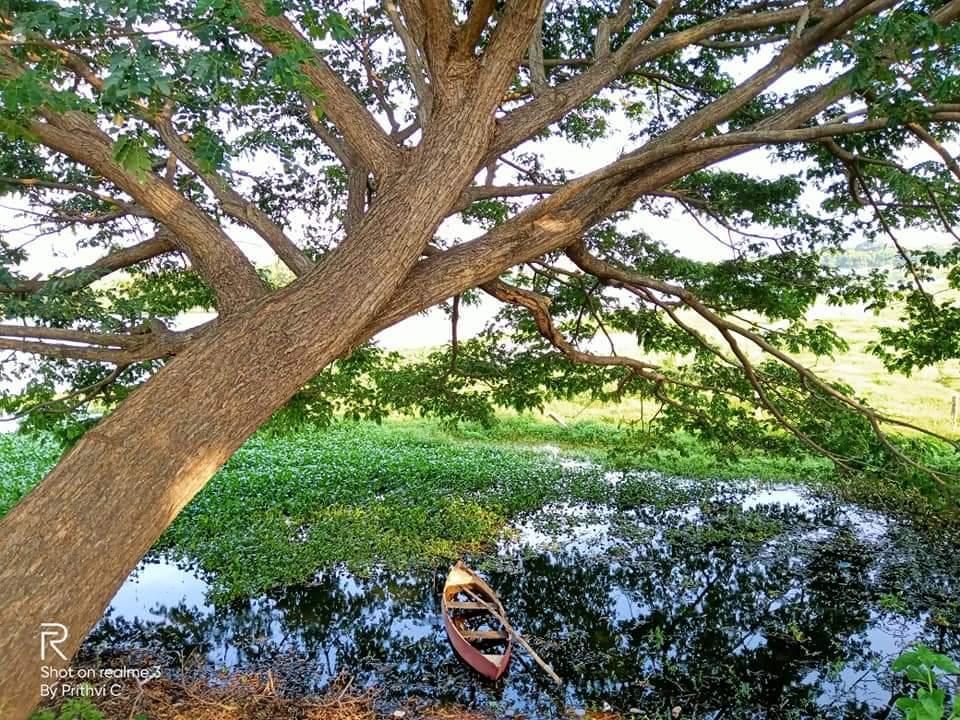
Kukkarahalli Lake also called Kukkarhalli Kere (Lake is ‘’kere’’ in local Kannada language), located in the heart of the Mysore city, adjoins the Manasgangotri (University of Mysore), the Kalamandir (Rangyana) and the Central Food Technological Research Institute (CFTRI) campus (separated by the Hunsur Road). It provides lung-space to the city. Mummadi Krishnaraja Wodeyar, (1794–1868) of the Mysore Dynasty (Kingdom of Mysore) was responsible for getting the lake created, in the year 1864. There is a 4.5 km walkway on the periphery of the lake with shaded stone benches for visitors to sit, relax and enjoy the scenic serenity of the lake. No entry charges.
Location
Brindavan Garden
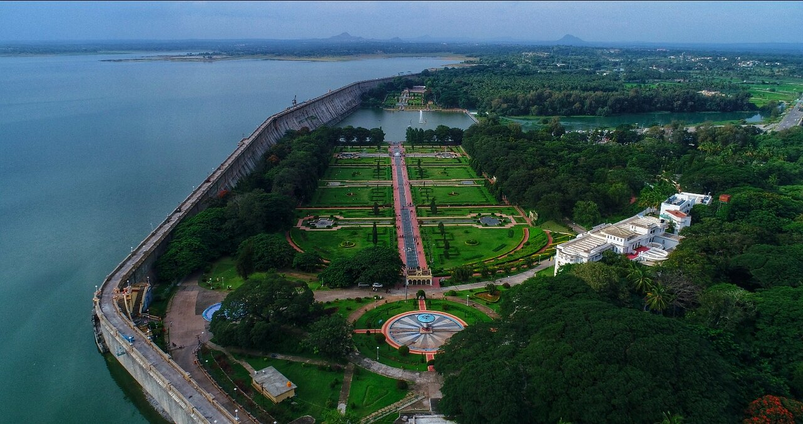
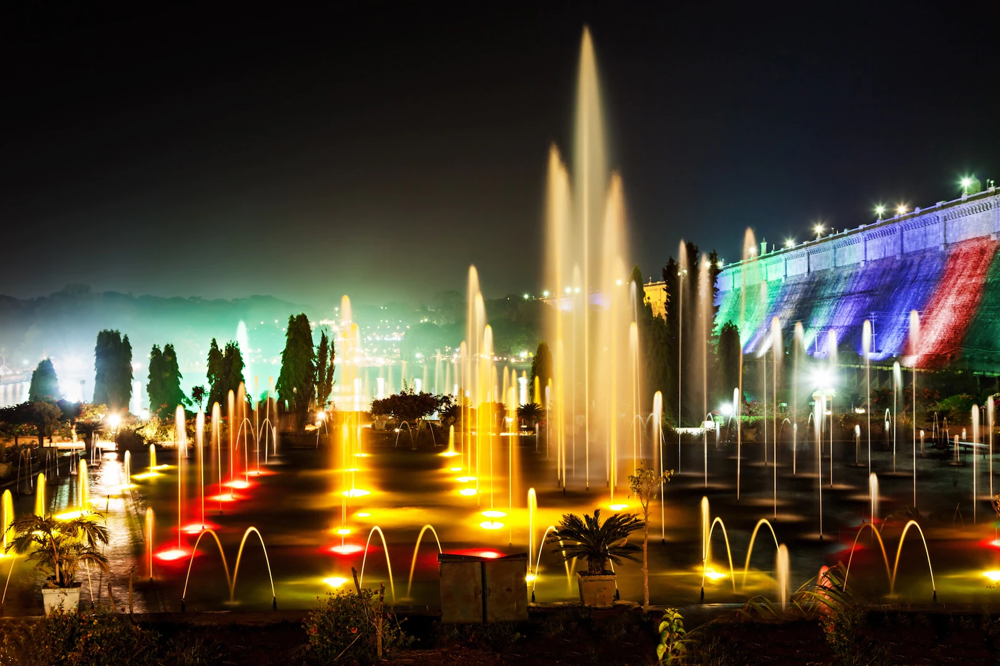
The Brindavan Gardens is a garden located 12 k.ms from the city of Mysore in the Mandya District of the Indian State of Karnataka. It lies adjoining the Krishnarajasagara Dam which is built across the river Kaveri. The work on laying out this garden was started in the year 1927 and completed in 1932. Visited by close to 2 million tourists per year, the garden is one of the major attractions of Srirangapatna. Sir Mirza Ismail, the Deewan of Mysore, a man with a penchant for gardens, founded the Brindavan Gardens (Krishnaraja Sagar Dam in particular) and built the Cauvery River high-level canal to irrigate 120,000 acres (490 km2) in modern Mandya district. He was inspired by Hyder Ali who had earlier built the Lalbagh Botanical Gardens at Bangalore.
Location